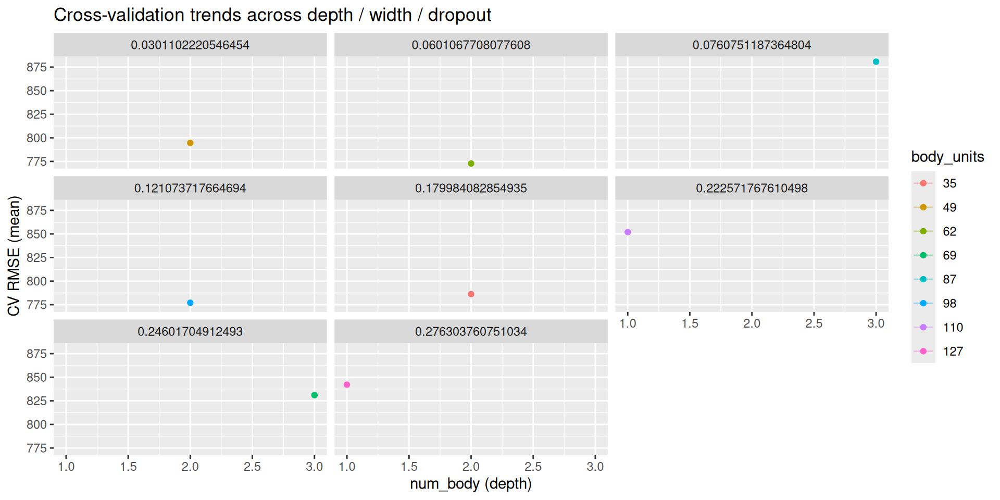
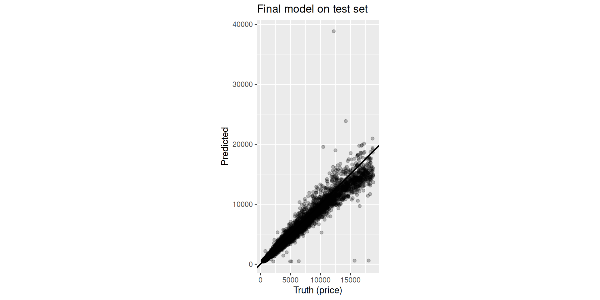
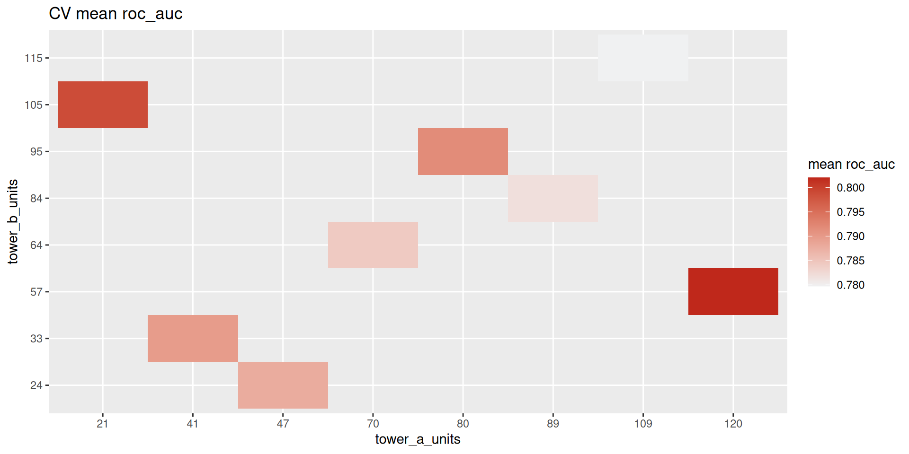
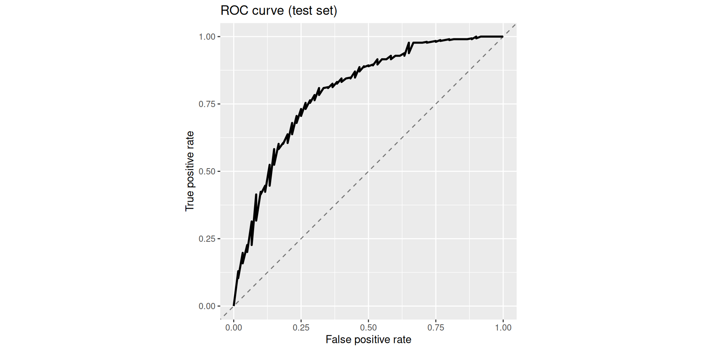

flowchart LR
classDef step fill:#f5f7fa,stroke:#5c6b7a,color:#1b3a57,stroke-width:2px;
classDef tune fill:#BF281B,stroke:#BF281B,color:#ffffff,stroke-width:2px;
A["Blocks<br/>(plain R functions)"] --> B["Spec function<br/>create_keras_*_spec()"]
B --> C["Workflow<br/>recipe() + workflow()"]
C --> D["Tuning<br/>tune_grid()"]
A -. "args → tunables<br/>num_{block} repeats" .-> B
class A,B,C step;
class D tune;
kerasnip: A Bridge Between ‘keras’ and ‘tidymodels’
Madrid R Group | February 2026
kerasnip v0.1.0.900
Docs: davidrsch.github.io/kerasnip · Repo: github.com/davidrsch/kerasnip
Today
- Why tuning Keras inside tidymodels is hard
- What
kerasnipgenerates and why it matters - Sequential workflow: structural tuning with
num_{block} - Functional workflow: branch/merge graphs with
inp_spec()
The Landscape & The Gap
🧱 Keras (via keras3)
- Deep Learning
- Tensor-centric & imperative
- Backend agnostic (TF, JAX, Torch)
- Arbitrary graphs of layers
🧹 tidymodels
- Machine Learning
- Dataframe-centric & declarative
- Unified interface (
fit,predict) - Standardized tuning
The gap: tune_grid() handles learning rate easily, but tuning model structure — depth, width, branches — is awkward. parsnip expects a fixed set of named arguments; Keras models are arbitrary graphs.
kerasnip turns architecture decisions into standard tunable arguments.
Mental Model
One rule: if you want to tune it, make it a function argument.
Sequential Blocks
input_block <- function(model, input_shape) {
keras_model_sequential(input_shape = input_shape)
}
dense_block <- function(model, units = 128, dropout = 0.0) {
model |>
layer_dense(units = units, activation = "relu") |>
layer_dropout(rate = dropout)
}
output_block <- function(model) {
model |> layer_dense(units = 1)
}Generate Spec + Structural Tuning
Register the spec
This creates diamond_mlp() — a standard parsnip model function.
Diamonds Workflow
library(tidymodels); library(kerasnip)
data(diamonds, package = "ggplot2")
diamonds_split <- initial_split(diamonds, strata = price)
diamonds_train <- training(diamonds_split)
diamonds_rec <- recipe(price ~ ., data = diamonds_train) |>
step_dummy(all_nominal_predictors()) |>
step_zv(all_predictors()) |>
step_normalize(all_numeric_predictors())
wf <- workflow() |> add_recipe(diamonds_rec) |> add_model(spec)
params <- extract_parameter_set_dials(wf) |>
update(
num_body = dials::num_terms(c(1, 4)),
body_units = dials::hidden_units(c(32, 256)),
body_dropout = dials::dropout(c(0, 0.4))
)
grid <- grid_latin_hypercube(params, size = 20)
folds <- vfold_cv(diamonds_train, v = 5, strata = price)
res <- tune_grid(wf, resamples = folds, grid = grid)Results (Diamonds): CV — Table
| num_body | body_units | body_dropout | mean | std_err |
|---|---|---|---|---|
| 2 | 62 | 0.060 | 772.789 | 56.305 |
| 2 | 98 | 0.121 | 777.076 | 58.157 |
| 2 | 35 | 0.180 | 786.251 | 37.655 |
| 2 | 49 | 0.030 | 794.592 | 67.419 |
| 3 | 69 | 0.246 | 831.059 | 63.567 |
Results (Diamonds): CV — Plot

Results (Diamonds): Test — Table
| .metric | .estimate |
|---|---|
| rmse | 787.3259 |
| mae | 404.4368 |
| rsq | 0.9673 |
Results (Diamonds): Test — Plot

Debugging: compile_keras_grid()
# A tibble: 1 × 4
num_body body_units body_dropout error
<dbl> <dbl> <dbl> <chr>
1 3 128 0.2 <NA> # A tibble: 7 × 2
layer class
<chr> <chr>
1 dense_150 keras.src.layers.core.dense.Dense
2 dropout_100 keras.src.layers.regularization.dropout.Dropout
3 dense_151 keras.src.layers.core.dense.Dense
4 dropout_101 keras.src.layers.regularization.dropout.Dropout
5 dense_152 keras.src.layers.core.dense.Dense
6 dropout_102 keras.src.layers.regularization.dropout.Dropout
7 dense_153 keras.src.layers.core.dense.Dense Functional API: Blocks + Graph
Blocks receive tensors, not models
input_block <- function(input_shape) {
layer_input(shape = input_shape,
name = "features")
}
dense_block <- function(tensor,
units = 64,
dropout = 0.0) {
tensor |>
layer_dense(units = units,
activation = "relu") |>
layer_dropout(rate = dropout)
}
concat_block <- function(input_a, input_b) {
layer_concatenate(list(input_a, input_b))
}
output_block <- function(tensor, num_classes) {
tensor |>
layer_dense(units = num_classes,
activation = "softmax")
}inp_spec() wires outputs to inputs by name
create_keras_functional_spec(
model_name = "attrition_towers",
layer_blocks = list(
main_input = input_block,
tower_a = inp_spec(
dense_block,
"main_input"),
tower_b = inp_spec(
dense_block,
"main_input"),
joined = inp_spec(
concat_block,
c(input_a = "tower_a",
input_b = "tower_b")),
output = inp_spec(
output_block,
"joined")
),
mode = "classification"
)Attrition Workflow
library(tidymodels); library(modeldata)
data(attrition)
attr_split <- initial_split(attrition, strata = Attrition)
attr_train <- training(attr_split)
attr_rec <- recipe(Attrition ~ ., data = attr_train) |>
step_zv(all_predictors()) |>
step_dummy(all_nominal_predictors()) |>
step_normalize(all_numeric_predictors())
attr_spec <- attrition_towers(
tower_a_units = tune(),
tower_b_units = tune(),
fit_epochs = 20
) |> set_engine("keras")
attr_wf <- workflow() |> add_recipe(attr_rec) |> add_model(attr_spec)
params <- extract_parameter_set_dials(attr_wf) |>
update(tower_a_units = dials::hidden_units(c(16, 128)),
tower_b_units = dials::hidden_units(c(16, 128)))
res <- tune_grid(attr_wf,
resamples = vfold_cv(attr_train, v = 3, strata = Attrition),
grid = grid_latin_hypercube(params, size = 12))Results (Attrition): CV — Table
| tower_a_units | tower_b_units | mean | std_err |
|---|---|---|---|
| 120 | 57 | 0.8020 | 0.0230 |
| 21 | 105 | 0.7988 | 0.0215 |
| 80 | 95 | 0.7917 | 0.0201 |
| 41 | 33 | 0.7898 | 0.0191 |
| 47 | 24 | 0.7879 | 0.0175 |
Results (Attrition): CV — Plot

Results (Attrition): Test — Table
| .metric | .estimate |
|---|---|
| accuracy | 0.8455 |
| roc_auc | 0.7983 |
Results (Attrition): Test — Plot

Practical Tips & Trade-offs
To avoid pain
- Always run
compile_keras_grid()before tuning - Keep blocks small and testable — isolate errors with 2–3 blocks
- Tune structure (depth/width) first; training hyperparameters later
- Keep search spaces reasonable — depth × width explodes fast
Limitations
- No pre-built blocks (ResNet, LSTM…) — you define them
- Custom loss functions require some boilerplate
Why it is worth it
- Workflow parity —
recipes,workflows,tunework exactly like withglmnet - Reproducibility — topology is code; version-control your architecture
- Extensibility — wrap any Keras layer (Transformers, RNNs) into a block
Resources

kerasnip v0.1.0.900